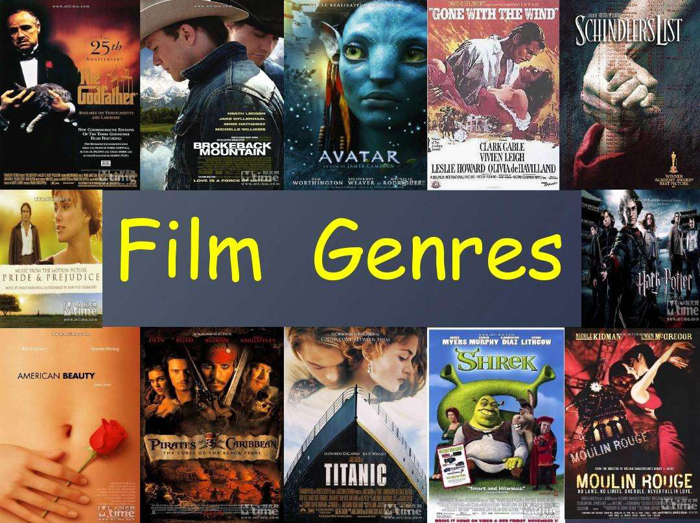
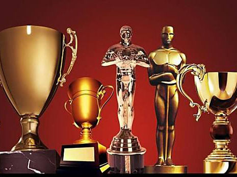
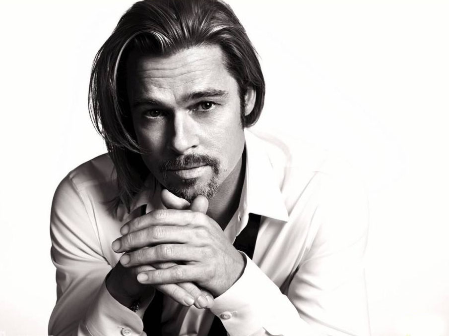
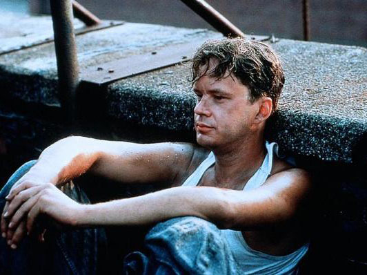
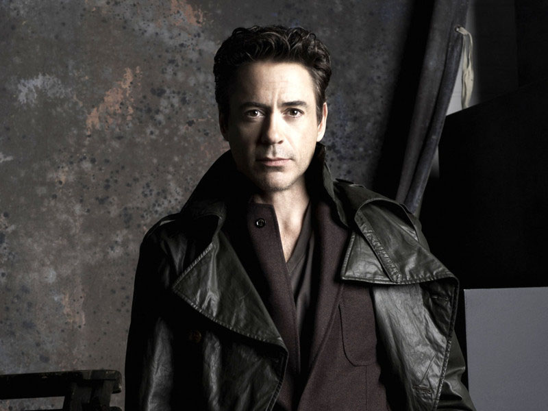
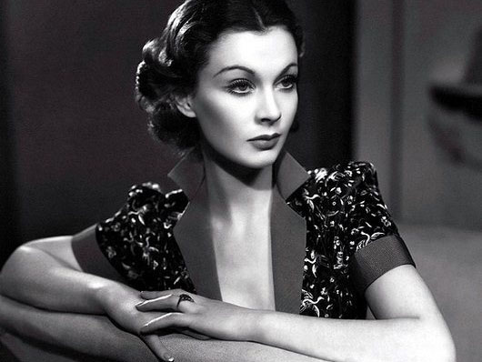

When You Meet Good Movies

电影起源（Film Origin）
电影是人类知道其确切产生时间和成长历程的艺术，是20世纪以来发展迅速、影响巨大的媒体，
是政治、经济、文化三位一体的创意产业。从19世纪末开始，法国、美国及其他地区的电影发明家们相继
发明了能摹拟人的眼睛和耳朵的光声记录和还原的技术和机器，这种电影技术从一诞生，就被企业家发展
成为电影生意，被政治家发展成为意识形态，被艺术家发展成为电影艺术，被研究者发展成为电影理论。
一部电影发展史同时也是电影人探索电影规律的历史。
电影语言及电影艺术的诞生和发展，与导演实践和理论探索息息相关，最初西洋镜杂耍的制
作人是导演的雏形，随着对电影表现方式和电影特性的探索，相继出现了卢米埃尔兄弟、乔治·梅里爱、埃
德温·鲍特和格里菲斯等早期的电影艺术探索者，这些电影先驱拓展了电影语言和电影创意的可能性。早期
的电影创作、电影经营和电影探索是三位一体的，此时，电影制作者同时也是电影语言的探索者，还是电影
的经营者，是具有完备职能的电影人雏形。
发展历史（History Development）
① 形成期（1895-1927）卢米埃尔创造了最早的新闻片、旅游片、纪录片、喜剧片等影片样式。 1908年，世界上第二座影城——好莱坞也在拍摄《基度山伯爵》时初具雏形。1913-1926年，无声 电影走向成熟。
② 成熟期（1927-1945）1927年是电影史上具有划时代意义的一年。《爵士歌王》影片的诞生标志 着有声电影时代的来临，同时也是电影走向成熟期的标志。1935年，马摩里安摄制了世界上第一部彩色故 事片《浮华世界》。彩色电影的问世，标志着电影从诞生发展达到了完善成熟的发展时期，从此电影艺术进入了新的发展阶段。
③ 发展期（1945-1960）这一时期世界电影史上有着重要影响的是意大利的新现实主义电影。新现实主义 电影在五十年代中期衰落，但对推动电影艺术的发展，是起到极其重大的作用的。
④ 多样化（1960-今）这一时期，香港电影发展到充斥着整个中南亚电影市场，并影响着整个大陆的局面。所以， 本时期世界电影已由过去的四足分立并进变成了全球性大发展。
电影分类（Film Genres）
按照排序 今日热播|本周热播|历史热播|最新上映|用户好评|会员|独家|正在上映|付费|免费
按照地区 内地|香港|台湾|美国|日本|韩国|英国|法国|德国|意大利|西班牙|俄罗斯|加拿大|印度|泰国
按照类型 动作电影|奇幻电影|喜剧电影|恐怖电影|冒险电影|爱情电影|警匪电影|科幻电影|战争电影|灾难电影
史诗电影|实验电影|微电影|微动漫电影|悬疑电影|音乐电影|黑帮电影|纪录电影|公路电影|动画电影|温情电影
惊悚电影|西部电影|人物电影|飞车电影|家庭电影|超级英雄电影
按照年份 2017 2016 2015 2014 2013 2012 2011 2010 00年代 90年代 80年代 更早
电影奖项（Film Award）
美国奥斯卡电影金像奖（Academy Awards）美国电影艺术与科学学院奖（Academy Awards）， 英文缩写为AA,简称奥斯卡金像奖（Oscars），世界著名电影奖项。1928年设立，每年一次在美国洛杉矶 好莱坞举行，半个多世纪一直享有盛誉。
欧洲电影奖（European Film Awards）1988年欧洲电影奖。该奖的宗旨是永久树立欧洲各国都遵循的电影的艺术精神，意在唤醒全球观众对 欧洲艺术人文电影的信心及支持。原来欧洲电影奖总部一直设在德国柏林，进入90年代后期，欧洲电影奖 打破了地域限制，把十年庆典移师伦敦。2000年欧洲电影奖在法国的巴黎举行。
法国凯撒奖（César Awards）法国国内电影的最高评奖，有“法国奥斯卡”之称，由法国电影艺术与 技术学会和法国电视二台合作举办。并组织评选投票产生。它以法国著名雕塑家巴勒达西尼·凯撒命名（因 凯撒奖奖座由他设计）。始于1976年，每年一届。首届设13个单项奖，即最佳法国片、导演、编剧、男女 主角等。1982年开始增设最佳处女作奖。1984年又增设最佳男女青年演员希望奖。
美国电影金球奖（Golden Globes）金球奖始自1943年，由好莱坞外国记者协会主办，是美国影视界 最重要的奖项之一，金球奖共设有24个奖项，金球奖的被提名者名单通常是在圣诞节前公布，颁奖晚会则 选在一月中旬举行。
—— About Movies ——
电影起源
The Origin

电影是人类知道其确切成长历程的艺术，是20世纪以来发展迅速、影响巨大的媒体。是政治、 经济、文化三位一体的创意产业。
发展历史
Development
- ① 形成期（1895-1927）
- ② 成熟期（1927-1945）
- ③ 发展期（1945-1960）
- ④ 多样化（1960-今）
电影分类
Film Genres

- ☞ 按照排序
- ☞ 按照地区
- ☞ 按照类型
- ☞ 按照演员
电影奖项
Film Awards

- 美国奥斯卡电影金像奖
- 欧洲电影奖
- 法国凯撒奖
- 美国电影金球奖
The stars you can't forget
-
保罗·沃克（Paul Walker）
出演作品：
- 《速度与激情》（系列）
- 《南极大冒险》
- 《头骨俱乐部》
- 《碧海追踪》
- 《赛车风云》
- 《壁橱里的怪物》
- 《暴力街区》
- 《生死救婴》
- 《撕裂记忆体》
- 《劫匪》
- 《当铺大乱斗》
保罗·沃克（Paul Walker），1973年9月12日出生于加利福尼亚格兰岱尔市，美国演员、模特。
-
奥黛丽·赫本
（Audrey Hepburn）出演作品：
- 《罗马假日》
- 《窈窕淑女》（歌舞片）
- 《蒂凡尼的早餐》
- 《直到永远》
- 《荷兰七课》（纪录片）
- 《龙凤配》
- 《谜中谜》
- 《修女传》
- 《天堂里的笑声》
- 《野燕麦》
- 《战争与和平》
奥黛丽·赫本（Audrey Hepburn），1929年5月4日出生于比利时布鲁塞尔，英国电影和舞台剧女演员。
-
梅尔·吉布森
（Mel Columcille Gerard Gibson）出演作品：
- 《勇敢的心》
- 《敢死队3》
- 《血战钢锯岭》
- 《耶稣受难记》
- 《爱国者》
- 《蒂姆爱我》
- 《致命武器》
- 《疯狂的麦克斯》
- 《破晓时刻》
- 《电线上的鸟》
- 《绑票通缉令》

梅尔·吉布森（Mel Columcille Gerard Gibson），1956年1月3日出生于纽约州，美国男演员、导演及制片人。
-
斯嘉丽·约翰逊
（Scarlett Johansson）出演作品：
- 《复仇者联盟》
- 《迷失东京》
- 《戴珍珠耳环的少女》
- 《她》
- 《美国队长》
- 《曼尼和罗》
- 《超体》
- 《奇幻森林》
- 《幽灵世界》
- 《保姆日记》
- 《攻壳机动队》
斯嘉丽·约翰逊（Scarlett Johansson），1984年11月22日生于纽约，美国女演员。
-

布拉德·皮特（Brad Pitt）
出演作品：
- 《搏击俱乐部》
- 《燃情岁月》
- 《七宗罪》
- 《史密斯夫妇》
- 《夜访吸血鬼》
- 《加州杀手》
- 《十一罗汉》
- 《神枪手之死》
- 《温柔的杀戮》
- 《黑金杀机》
- 《间谍同盟》
布拉德·皮特（Brad Pitt），1963年12月18日出生于美国俄克拉何马州，美国电影演员、制片人。
-
娜塔丽·波特曼
（Natalie Portman）出演作品：
- 《这个杀手不太冷》
- 《黑天鹅》
- 《偷心》
- 《V字仇杀队》
- 《美丽佳人》
- 《星球大战前传三部曲》
- 《雷神2：黑暗世界》
- 《盗火线》
- 《大家都说我爱你》
- 《火星人玩转地球》
- 《雷神》
娜塔丽·波特曼（Natalie Portman），1981年6月9日出生于以色列耶路撒冷，美国演员。
-

蒂姆·罗宾斯（Tim Robbins）
出演作品：
- 《肖申克的救赎》
- 《神秘河》
- 《超级大玩家》
- 《玩具兵》
- 《百万金臂》
- 《金钱帝国》
- 《再无可失》
- 《火星任务》
- 《代码46》
- 《真实电影》
- 《犯罪生活》
蒂姆·罗宾斯（Tim Robbins），1958年10月16日生于加州，美国男演员、导演、编剧及制片人。
-
苏菲·玛索（Sophie Marceau）
出演作品：
- 《初吻》
- 《勇敢的心》
- 《芳芳》
- 《安娜卡列尼娜》
- 《超级女特工》
- 《心火》
- 《不要回头》
- 《007之黑日危机》
- 《卢浮魅影》
- 《当爱变成习惯》
- 《豪情玫瑰》
苏菲·玛索（Sophie Marceau），1966年11月17日出生于法国巴黎，法国演员、导演、编剧。
-

小罗伯特·唐尼
（Robert Downey Jr.）出演作品：
- 《钢铁侠系列》
- 《卓别林》
- 《大侦探福尔摩斯》
- 《复仇者联盟系列》
- 《预产期》
- 《甜心俏佳人》
- 《热带惊雷》
- 《法官老爹》
- 《美国队长3》
- 《蜘蛛侠》
- 《恶搞之家》
小罗伯特·唐尼（Robert Downey Jr.），1965年4月4日出生于美国纽约州纽约市，美国电影演员、制片人。
-

费雯·丽（Vivien Leigh）
出演作品：
- 《乱世佳人》
- 《魂断蓝桥》
- 《欲望号街车》
- 《汉密尔顿夫人》
- 《欣欣向荣》
- 《仰面大笑》
- 《英伦浩劫》
- 《牛津风云》
- 《罗密欧与茱丽叶》
- 《凯萨与克丽奥佩拉》
- 《蔚蓝深海》
费雯·丽（Vivien Leigh），1913年11月5日出生于英属印度西孟加拉邦大吉岭，原名费雯·玛丽·哈特利，英国电影和舞台剧演员。
-
汤姆·克鲁斯（Tom Cruise）
出演作品：
- 《碟中谍系列》
- 《夜访吸血鬼》
- 《壮志凌云》
- 《木兰花》
- 《雨人》
- 《生于七月四日》
- 《甜心先生》
- 《好人寥寥》
- 《大开眼戒》
- 《行动目标希特勒》
- 《香草的天空》
汤姆·克鲁斯（Tom Cruise），1962年7月3日出生于美国纽约州，美国电影演员、电影制片人。
-
凯特·温斯莱特
（Kate Winslet）出演作品：
- 《泰坦尼克号》
- 《生死朗读》
- 《美丽心灵的永恒阳光》
- 《理智与情感》
- 《身为人母》
- 《欲海情魔》
- 《携手人生》
- 《恋爱假期》
- 《分歧者：异类觉醒》
- 《附属美人》
- 《我们之间的那座山》
凯特·温斯莱特（Kate Winslet），1975年10月5日出生于英国伯克郡，英国影视女演员。
教父
乱世佳人
海上钢琴师
初吻
肖申克的救赎
放牛班的春天
这个杀手不太冷
爱乐之城
音乐之声
《肖申克的救赎》毫无疑问是一部好片子，没有动作,没有特技,甚至没有美人，却依然能深深打动观众,并且历经十几年而魅力不减。
阿甘天生注定不是一个出类拔萃的人。但上天又如此公平，它令起点不高的人比天生优越感十足的人更早，更深刻地认识到生活的真实。
《美丽人生》所谓美丽，除非是从心而生，亦即意志控制的结果。所以，“美丽人生”，实则是通过意志控制得来的美丽人生。
1972年发生了这么几件历史性的事。尼克松访华了、慕尼黑惨案了、阿波罗登月计划完结了；还有就是，科波拉的《教父》上映了。
《天使爱美丽》中的插曲，手风琴，我喜欢。最后的曲子用了钢琴，我想是为了圆满画上句号的意味吧。